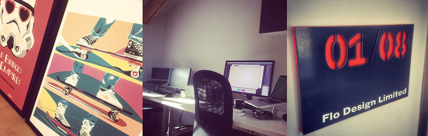

New site, New Office , New Year
OK so I know it's March and that's a bit late for a new year post but hey I'm going with it OK?
Its been a bit of a whirlwind here at Flo Design since the start of the year. First we moved into our swanky new office situated in the great Tower Works development and now we've only gone and launched our new web site! Add to that the launch of a client site and winning some really exciting new projects and 2014 is off to a great start.
A new home
just a week back after the Christmas and new year break we upped sticks and moved from our shared office space at QU2 and into our fancy new office that's all ours! No more exiting the room to take phone calls or having to listen to music on headphones. Its our office and we'll play rubbish music if we want to! The new office may be small but its perfectly formed and suits our needs brilliantly and the building is crammed full of other awesome creative companies and individuals, you can't help but be inspired by. We love our new home so feel free to drop in if you're in the area.

A new site
As well as moving into a brand new office we've also launched our brand new web site. I very quickly fell out of love with the old design and as such the site never grew beyond 2 pages. The use of lots of blocks of dark colour began to feel oppressive and constricting to me and it didn't really fit in with our values of keeping things simple, clean and open. It had to go. We're really happy with how the new site turned out, there is still more we'd like to do with it and add to it so keep an eye out for new things happening on there in the future :) we believe that the best sites evolve over time and that's what we want to do with this one.
I'm planning on doing a bit of a more technical case study on the design and build process of the new site so keep an eye out for that in the coming weeks.
We'd love to know what you think of the new site so let us know on twitter.